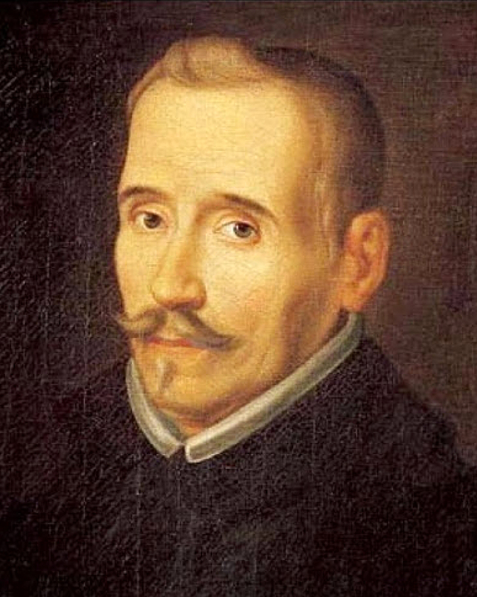
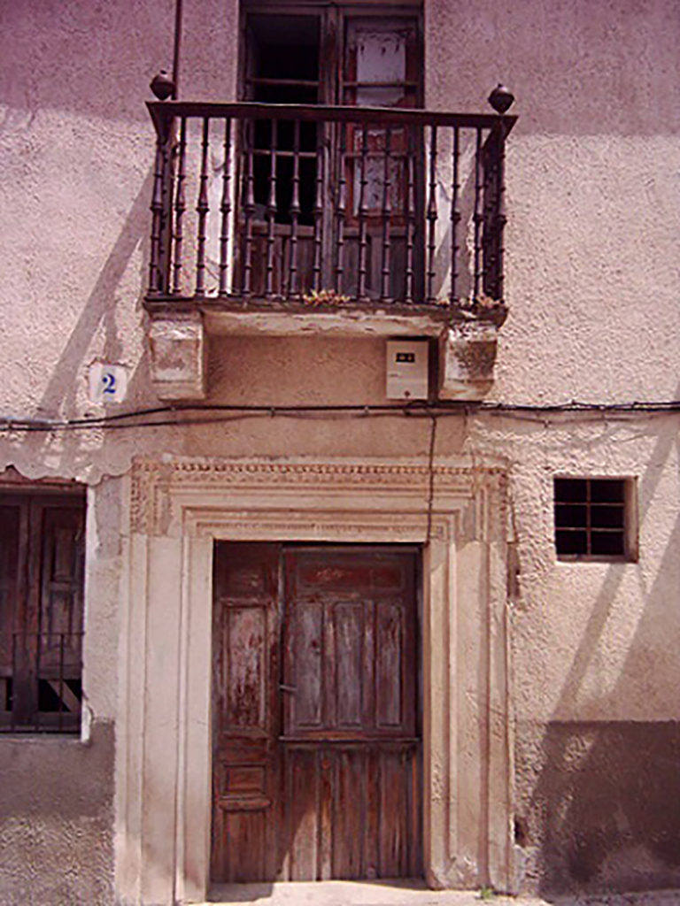
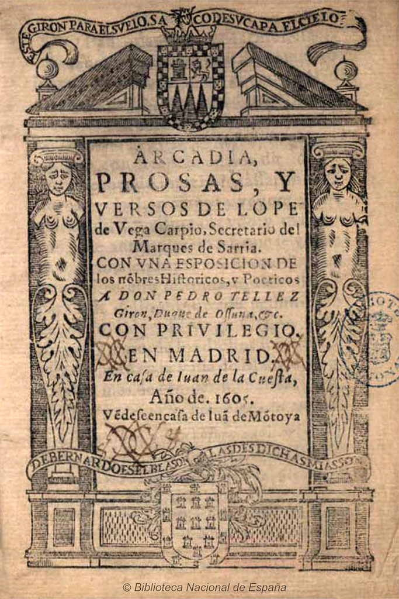
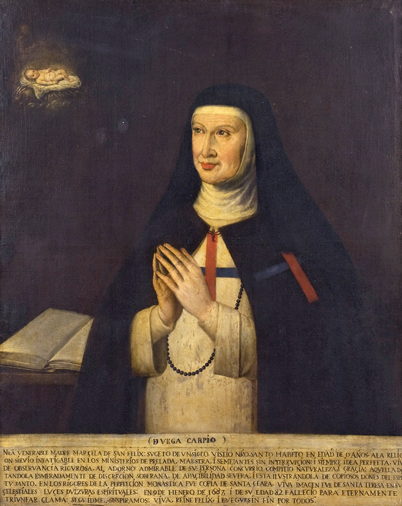
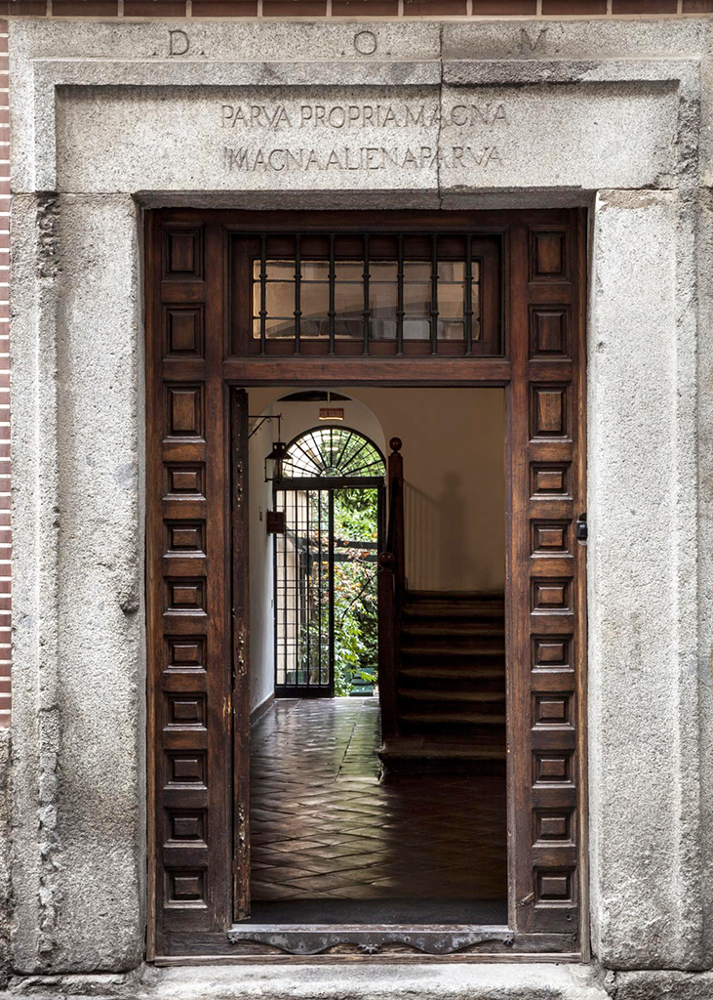
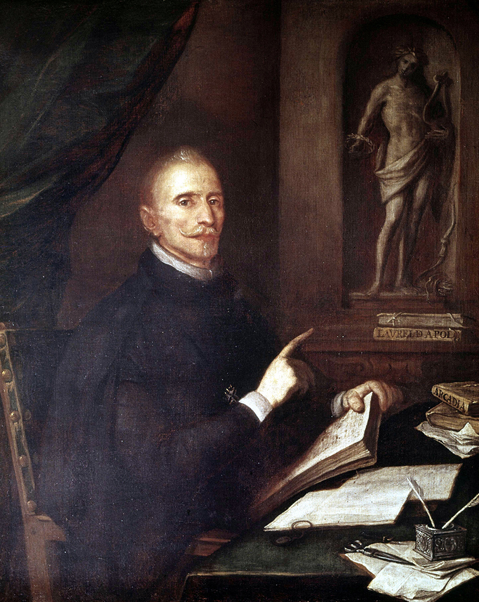
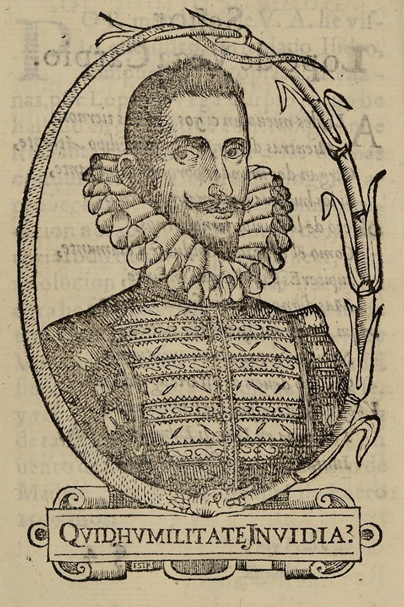
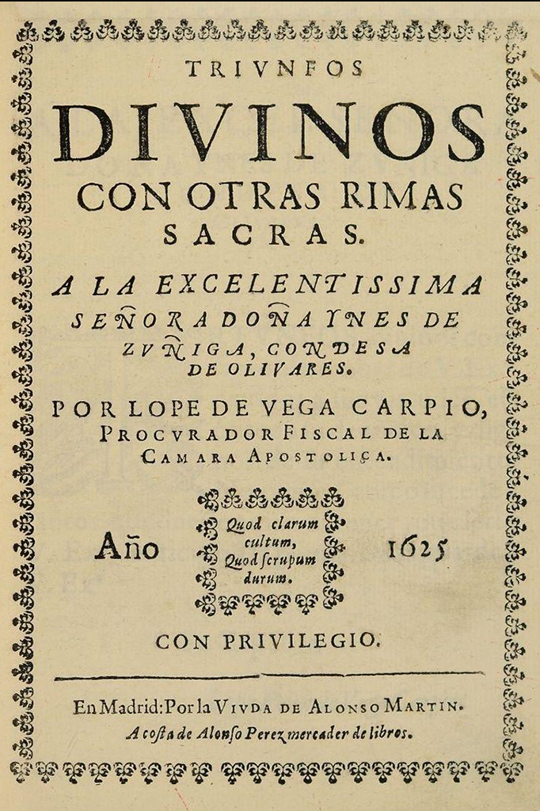
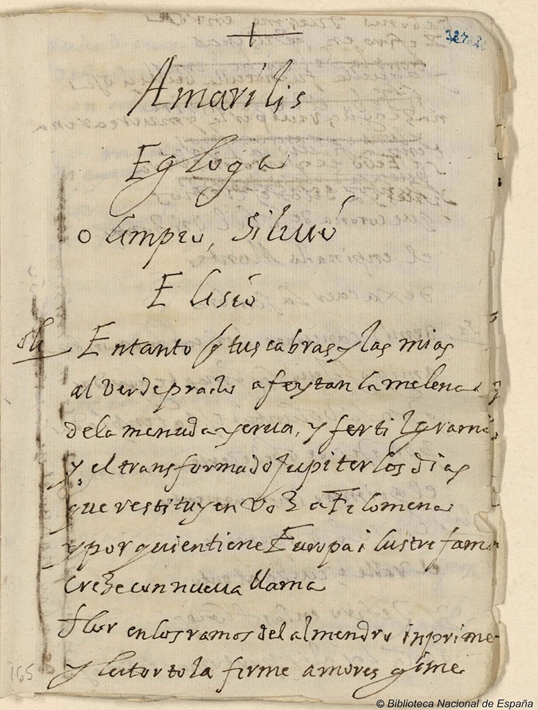
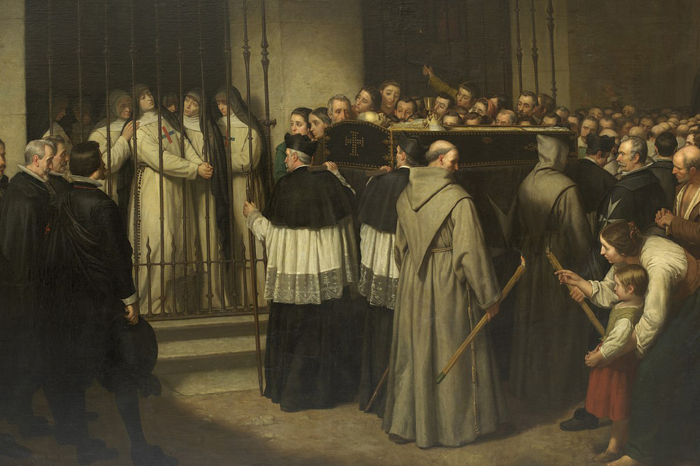

Lope Félix de Vega Carpio nació en Madrid el 25 de noviembre de 1562 y fue bautizado el 6 de diciembre siguiente, según relató su discípulo y primer biógrafo Juan Pérez de Montalbán. Era el cuarto hijo de Francisca Fernández Flores y del bordador Félix de Vega, hombre caritativo y aficionado a la poesía. Naturales del valle de Carriedo, los padres de Lope se habían afincado en Madrid apenas un año antes del nacimiento del dramaturgo, atraídos, seguramente, por las posibilidades que ofrecía la Corte, recientemente trasladada a la Villa. Pese a su origen humilde, Lope disfrazó con ensoñaciones de abolengo nobiliario su propia genealogía, como quedó patente en las diecinueve torres del escudo de los Carpio que imprimiría en la portada de la Arcadia en 1598.
Infancia, formación y primeros versos

Contamos con pocos datos en torno a la infancia y juventud de Lope, y la mayoría son autobiográficos y evocan una época feliz en la que se desenvolvió con audacia y manifestó dotes para el estudio. Siendo niño participó de la vida cristiana y piadosa de su hogar a través de la amistad de su padre con el beato Bernardino de Obregón, asistiendo a los enfermos del Hospital de la Corte con sus hermanos. Parece ser que pasó una temporada en Sevilla junto a su tío, el inquisidor don Miguel del Carpio, de quien adoptaría el apellido. Sus primeros estudios fueron de la mano del músico y escritor Vicente Espinel, a quien siempre recordaría con gran estima.
Desde 1574 hasta 1576, siguió su formación con los jesuitas, gracias a la cual entraría en contacto con el teatro hagiográfico que se representaba habitualmente en los colegios de la Compañía. Practicaría entonces sus primeros versos que irían ganando en perfeccionamiento conforme avanzaba en su conocimiento e imitación de los clásicos. Tras dejar sus estudios, empezó a servir como paje a don Jerónimo Manrique de Lara, inquisidor general y obispo de Cartagena. Es posible que bajo su protección estudiase en la Universidad de Alcalá de Henares, entre 1577 y 1581, y después en Salamanca, sin que al parecer alcanzara ninguna titulación.
En 1583 probablemente participó como soldado en la expedición a las Azores, entrando posteriormente al servicio del marqués de las Navas, hasta 1587. A partir de 1580, Lope empezó a despuntar como poeta y dramaturgo, con obras como Los cinco misterios dolorosos de la Pasión y Muerte de Nuestro Señor Jesucristo o Los hechos de Garcilaso de la Vega y el moro Tarfe. Como muestra de la reputación que había ido adquiriendo en el ámbito literario, en 1585 Cervantes lo incluyó en el Canto de Calíope de La Galatea, entre los escritores más destacados del momento.
El destierro y la Armada Invencible
Poco después de su supuesto regreso de las Azores, el dramaturgo inició una relación con la actriz Elena Osorio. Era hija del autor de comedias Jerónimo Velázquez, y estaba casada, desde 1576, con el actor Cristóbal Calderón, que había emigrado a Indias. En los cinco años que aproximadamente duró la tormentosa relación, el dramaturgo siguió su formación recibiendo clases de matemáticas y astrología con Juan Bautista Lasaña y lecciones de esgrima de manos de Pablo de Paredes. La relación con Elena se trastocó con la entrada en juego de Francisco Perrenot, sobrino del Cardenal Granvela, que era un pretendiente para la actriz mejor posicionado económicamente. Lope, despechado, dejó de vender sus comedias a Jerónimo Velázquez y escribió unos libelos difamatorios contra Elena y su familia que desembocaron en un proceso judicial contra el dramaturgo.

Lope fue detenido el 29 de diciembre de 1587 en el Corral de la Cruz, durante una representación. Tras el juicio, y una nueva querella por reincidir en sus injurias, el 5 de febrero de 1588 se dictó definitivamente sentencia y Lope fue condenado a ocho años de destierro de la Corte y a dos del Reino de Castilla. Decidió entonces trasladarse a Valencia, por consejo del autor de comedias Gaspar de Porres, con quien partiría, junto a su amigo Claudio Conde y una joven a la que convenció para que le siguiera, dándole palabra de matrimonio. Era una doncella de veinte años, llamada Isabel de Urbina y Alderete, hija de un regidor de Madrid y rey de armas de Felipe II. La familia denunció al poeta por rapto y la trifulca judicial se saldó con la boda por poderes el 10 de mayo de ese mismo año.
Apenas unas dos semanas después, el dramaturgo se dirigió a Lisboa y se alistó en la Armada Invencible. Tras regresar, se reunió con su esposa en Toledo y se establecieron nuevamente en Valencia en 1589, donde cumplieron los dos años fuera del Reino a los que había sido condenado. Lope frecuentó los círculos literarios de la ciudad del Turia, entrando en contacto con dramaturgos como Guillén de Castro, Francisco Agustín de Tárrega o Cristóbal de Virués. Su teatro experimentó una evolución cada vez más próxima a la conformación de la comedia nueva y al establecimiento de la escritura dramática como su modus vivendi.
Al servicio del duque de Alba
En 1590 se trasladó con su esposa a Toledo y entró al servicio del futuro marqués de Malpica, cargo que desempeñó apenas unos meses, porque en junio de 1591 empezó a ejercer como secretario del duque de Alba, don Antonio Álvarez de Toledo. Permaneció en Alba de Tormes hasta 1595, en una casa en la Plazuela de Barrionuevo. En ese periodo compuso varias comedias (El maestro de danzar, Laura perseguida, El favor agradecido, El caballero del milagro, San Segundo de Ávila…) y la novela pastoril la Arcadia, impresa unos años más tarde, en 1598.
El ámbito familiar se vio sacudido por varios sucesos trágicos: en noviembre de 1590 falleció su hija Teodora de Urbina y a finales de 1593 su segunda hija, Antonia. En agosto de 1594, su esposa, nuevamente embarazada, cayó gravemente enferma y murió al dar a luz el 18 de septiembre de 1594, cuando apenas contaba con 26 años. La recién nacida recibió el nombre de Teodora, en memoria de su hermana, y apenas logró superar el primer año de vida.
El 5 de febrero de 1595, Lope puso en almoneda sus bienes en Alba de Tormes y se dispuso a regresar a Madrid, donde se le concedió el indulto y se le levantó la condena, a instancias de una solicitud presentada por Jerónimo Velázquez el 18 de marzo de ese mismo año.
De regreso a Madrid: Juana de Guardo y Micaela de Luján

De nuevo en la Villa, ya convertido en una celebridad de las letras, entabló una relación amorosa con Antonia Trillo de Armentera, una treintañera de familia acomodada que también había enviudado recientemente. El enredo amoroso le costó a Lope un nuevo proceso judicial por amancebamiento, que no debió prosperar o del que salió absuelto. Rota la relación y ante el cierre de los teatros hasta abril de 1599, como duelo por la muerte de la infanta Catalina Micaela (6 de noviembre de 1597) y el posterior fallecimiento de Felipe II (13 de septiembre de 1598), Lope volvió a desempeñar cargos de secretario, esta vez en la casa del marqués de Malpica, y hacia 1598 en la del marqués de Sarria, don Pedro Fernández Ruiz de Castro, futuro conde de Lemos. En marzo de ese mismo año, el dramaturgo conoció a Juana de Guardo, hija de un abastecedor de carnes, con la que contrajo matrimonio apenas un mes después, el 25 de abril de 1598. Todo parece apuntar que se trató de un matrimonio de conveniencia, fruto del cual nacieron cuatro hijos: Jacinta y Juana, que murieron a temprana edad, Carlos Félix (1606-1612) y Feliciana (1613-1657).
Estas segundas nupcias de Lope no impidieron que acabara enredado en amores con la actriz Micaela de Luján, una joven analfabeta y notablemente bella, casada con Diego Díaz de Castro, un actor de la compañía de Alonso Cisneros, que se había trasladado a América. La actriz, retirada de las tablas cuando inició su relación con Lope (seguramente a partir del verano de 1598), se convirtió en la Lucinda o Camila Lucinda de los versos del poeta, quien al firmar pasó a anteponer a su nombre la M de Micaela. Con ella el dramaturgo estableció una familia paralela a la que oficialmente tenía junto a Juana de Guardo. La relación se mantuvo hasta 1608 y algunos de los hijos que nacieron fruto de ella, fueron registrados a nombre del legítimo esposo de Micaela. Juan (1601) y Félix (1603), los dos primeros, murieron siendo niños. Marcela (1605-1688) profesó en las trinitarias y sobrevivió a su padre, mientras que Lope Félix (1607-1634) murió en la isla Margarita un año antes de fallecer el poeta.
Las obras que Lope escribió y publicó durante esos años, como La hermosura de Angélica (1602), las Rimas (1602 y 1604), El peregrino en su patria (1604) o la Jerusalén conquistada (1609, pero escrita en 1605), reflejan en multitud de ocasiones las vicisitudes de su relación con Micaela de Luján. Fueron años de muchos viajes para el Fénix, pasando unas temporadas en el hogar que tenía con Juana y otras en el que tenía junto a su amante, en Sevilla. Hasta que en 1604, logró establecer a sus dos familias en Toledo. Ese mismo año se publicó en Zaragoza, sin su autorización, la Primera Parte de sus comedias bajo el título: Las comedias del famoso poeta Lope de Vega Carpio. A partir de entonces continuaron editándose las distintas Partes, aunque no pasaron a imprimirse oficialmente bajo su voluntad y control hasta 1617 (véase La transmisión).
La calle Francos, el sacerdocio y las obras maestras

El 23 de abril de 1605 falleció su hermana Isabel, y unas semanas después bautizó a su hija Marcela y organizó y dirigió una justa poética celebrada con motivo del nacimiento del Príncipe de Asturias. El verano de ese año conoció en Madrid a don Luis Fernández de Córdoba y de Aragón, conde de Cabra y futuro duque de Sessa, con quien trabó una amistad que mantuvo a lo largo de su vida, recibiendo la protección del aristócrata al que sirvió extraoficialmente como secretario, consejero sentimental y de Estado.
En octubre de 1607, mientras su familia oficial residía en Toledo, trasladó la formada con Micaela a Madrid, a donde viajaba con frecuencia tanto por asuntos personales, como por su labor profesional y sus servicios al Duque. En la primavera de 1608 escribió varios autos sacramentales para las fiestas de ese año y participó en las justas poéticas celebradas en Toledo durante las fiestas del Corpus, donde obtuvo el primer premio. Precisamente, para el enaltecimiento de estas festividades religiosas, Lope solicitó su ingreso en la Congregación de Esclavos del Santísimo Sacramento en septiembre de 1609, el año en que además de su Jerusalén conquistada, apareció la Segunda parte de las Comedias y una nueva edición de las Rimas que incluía el Arte nuevo de hacer comedias en este tiempo, escrito probablemente el otoño anterior.
El 24 de enero de 1610 Lope ingresó en la Congregación del Oratorio de las Trinitarias Descalzas. Había pasado los dos últimos años en constantes idas y venidas de Toledo a Madrid, hasta que ese año decidió instalarse definitivamente en la capital, comprando una casa en la calle Francos (hoy de Cervantes) en la que se instaló junto a su esposa Juana y los hijos habidos con ella. Su ánimo esos años fue debatiéndose entre el recogimiento de la vida familiar y constantes recaídas espirituales, que le llevaron a componer obras piadosas como los Cuatro soliloquios de Lope de Vega Carpio (1612), escritos con motivo de su ingreso en la Orden Tercera de San Francisco (septiembre de 1611). El verano de 1612 Lope cayó enfermo de calenturas, como su hijo Carlos Félix, al que había dedicado poco antes Los pastores de Belén (1612). El pequeño no logró sobrevivir y abrió con su muerte un periodo de nuevas fatalidades en la vida del dramaturgo.

Se cree que en torno a ese mismo año falleció también Micaela de Luján; así como su esposa Juana lo haría el 13 de agosto de 1613, pocos días después de haber dado a luz a su hija Feliciana. Lope agrupó en la casa de la calle Francos a los hijos que había tenido en sus dos relaciones. Y tal vez en un intento de remediar su crisis espiritual, agravada por las recientes perdidas, acabó ordenándose sacerdote en 1614, aunque no abandonó sus servicios como alcahuete del duque de Sessa ni los brazos de la actriz Jerónima de Burgos, una antigua amante con la que había vuelto a relacionarse.
De estos años datan obras tan significativas como: El villano en su rincón (1611), Fuenteovejuna (1612-1614), La dama boba (1613), El perro del hortelano (1613-1615) o las Rimas sacras (1614). En 1614, también apareció en Madrid la Cuarta parte de las Comedias, y un año después, la Parte V y la VI.
Marta de Nevares y la madurez literaria

Cuando Lope contaba con cincuenta y cuatro años, en 1616, después de mantener una aventura pasajera con la actriz Lucía de Salcedo, inició una relación con Marta de Nevares Santoyo (Amarilis), el último gran amor de su vida. Era una joven de veintiséis años, bellísima y culta, casada contra su voluntad cuando apenas era una niña. Fruto de los amores sacrílegos y adúlteros de Lope y Marta, nació el 12 de agosto de 1617, Antonia Clara. Ese año y el siguiente, la vida del poeta se vio marcada por continuos altercados a nivel personal y profesional. A la persecución del marido de Marta, y las sátiras y habladurías sobre su relación con la joven, se sumaron los ataques y polémicas literarias en las que se hallaba inmerso. En 1617 apareció la Spongia, un libelo contra el dramaturgo y sus obras poéticas, al que se daría réplica al año siguiente mediante la Expostulatio spongiae.
Con todo, las publicaciones de sus obras no dejaron de sucederse a un ritmo acelerado. Aparecieron las Partes de Comedias VII, VIII y IX; en estos años pleiteó contra los que imprimían sus comedias sin su control ni beneficio y, a pesar de perder el pleito, desde 1617 y la Novena parte de comedias, se ocupó personalmente de la edición de sus comedias con mayor o menor atención hasta la fecha de su muerte (véase La transmisión).
En 1618 se publicó la Parte X y la sexta edición de El peregrino en su patria, en la cual se recogía una lista actualizada de las comedias que reconocía como suyas y auténticas. En el terreno personal, sufrió a principios de año un intento de asesinato del que salió airoso; su salud se vio aquejada por el trabajo y los sobresaltos sufridos, y Marta perdió a la criatura de la que estaba embarazada.
La muerte del marido de Amarilis, a finales de 1619, supuso un notable alivio para la pareja. Desaparecida la amenaza, la casa de Lope alcanzó una cierta estabilidad y sosiego que permitieron al poeta centrarse en su trabajo y en su vida familiar, al margen de las pullas y críticas de sus enemigos.
Se encargó en 1620 de la dirección del certamen poético por la beatificación de San Isidro y en el de 1622 con motivo de la canonización del santo; solicitó el puesto de Cronista Real, que finalmente no le concedieron; y salieron a la luz las Partes XIII y XIV de sus comedias en 1620 y un año después las Partes XV, XVI y XVII, así como La Filomena que incluía la primera de las cuatro novelas a Marcia Leonarda (Las fortunas de Diana).
Se considera que fue en estos años cuando Lope escribió El caballero de Olmedo, que se publicaría por primera vez en Zaragoza, en 1641, recogida en la Parte XXIV de sus comedias.
Tras ese periodo productivo una nueva fatalidad sobrevino en la casa de Lope. Hacia 1623, poco después de que su hija Marcela profesase en las Trinitarias Descalzas, Marta de Nevares cayó enferma e inició una pérdida progresiva de la vista, que la llevaría a quedar completamente ciega. Además de la pesadumbre que experimentó Lope en la dedicación y cuidado de Marta, tuvo que hacer frente a cierto desengaño y agotamiento en torno a su trabajo, al no ver reconocidos suficientemente sus méritos y percibir el creciente entusiasmo que despertaba la nueva generación de literatos y especialmente la estética gongorina.

En 1623 se publicaron las Partes XVIII y XIX de sus comedias y la primera edición de La Circe, que incluía tres nuevas novelas dedicadas a Marcia Leonarda, fruto de la influencia positiva que ejercía Marta sobre Lope, animándolo a experimentar nuevos géneros y a seguir sumando logros a su haber literario. Ese año apareció en Pamplona su Romancero espiritual y Lope siguió con la literatura de tono religioso al publicar al año siguiente sus Triunfos divinos, además de la Parte XX, que salió a la luz antes de que la Junta de Reformación solicitase la prohibición de imprimir libros de comedias y novelas por razones morales (en 1625 dejaron de concederse licencias).
En julio de 1626 publicó los Soliloquios amorosos de un alma a Dios, y en septiembre de 1627 La Corona trágica, dedicada al Papa Urbano VIII, que unos meses después le concedió el título de doctor en Teología y el hábito de la Orden de San Juan, por el que pudo pasar a anteponer el «frey» a su nombre. En esa época, Marta se trasladó a vivir a una casa contigua a la de Lope, en la calle Francos, y vio agravada su enfermedad, llegando a tener accesos de locura.
Hacia 1630 Lope amenazó con dejar de escribir comedias y suplicó al duque de Sessa que le diera un cargo oficial en su casa, algo que nunca llegó a concederle. El pasado escandaloso del dramaturgo lo perseguía y apartaba de ese tipo de prebendas, como lo había alejado del puesto de Cronista Real, que en 1629 pasó a ocupar Pellicer. Publicó entonces el Laurel de Apolo, en el que llevaba trabajando desde 1628 y donde elogiaba a más de 280 poetas de su tiempo. En esos últimos años escribió menos teatro que en épocas precedentes, pero de una calidad inestimable, como El castigo sin venganza, una tragedia de nuevo corte compuesta en 1631.
Los últimos años y la muerte

Las desventuras siguieron sucediéndose en su entorno. El 7 de abril de 1632 falleció Marta. Los gastos del entierro corrieron a cargo de Alonso Pérez, librero e impresor amigo de Lope. Ese mismo año publicó su obra maestra La Dorotea, una «acción en prosa» en la que rememoró sus amores juveniles con Elena Osorio, engarzados con la experiencia de su amor maduro y trágico por Marta. El canto de corte virgiliano, Égloga a Amarilis (1633), le permitió también evocar la honda amargura que sentía tras la pérdida de ese último gran amor.
En los años posteriores, nuevas ausencias vendrían a seguir afligiendo al dramaturgo. Su hija Feliciana se casó el 18 de diciembre de 1633 y dejó el hogar paterno, donde solo quedaron Lope, su hija Antonia Clara, y la criada, Lorenza Sánchez. Ese mismo mes, falleció su amigo fray Hortensio F. Paravicino. Y apenas unos meses después, en agosto de 1634, su hija Antonia se fugó de casa con Cristóbal Tenorio, un criado del duque de Medina de las Torres. Nunca más volvería Lope a ver a su hija pequeña.
En noviembre de 1634, publicó las Rimas humanas y divinas del licenciado Tomé de Burguillos, alter ego creado en 1620, y a finales de ese año recibió la funesta noticia de la muerte de su hijo Lope Félix durante el naufragio de la embarcación en que viajaba en una expedición a la isla Margarita. El zarpazo de esta última noticia lo sumió en un dolor profundo del que ya no pudo recuperarse. Lope se enfrentó a sus últimos días solo, hundido en la tristeza, habiendo recibido el desaire de los poderosos, la falta de reconocimiento a su trayectoria, viéndose relegado profesionalmente por el éxito de la nuevas generaciones y desengañado y malherido por las desgracias familiares.
El sábado 25 de agosto de 1635 sufrió un desmayo en el Seminario de los Escoceses a donde había asistido como invitado. Al día siguiente firmó su testamento y recibió el viático y la extremaunción. El lunes 27, a las cinco y media de la tarde, falleció rodeado de amigos. A su funeral, celebrado un día después y sufragado por el duque de Sessa, acudió una multitud. La comitiva fúnebre pasó ante el convento de las Trinitarias Descalzas, desde el que su hija Marcela pudo despedirse de su padre. Finalmente fue sepultado a las dos y media de la tarde en la iglesia de San Sebastián. Los actos religiosos por su alma duraron nueve días, y a falta de un homenaje institucional, se sucedieron los promovidos por sus amigos y admiradores, para honrarle y dejar eterna la memoria de sus obras y sus días.
Legado y memoria póstuma

Juan Pérez de Montalbán publicó un año después de la muerte del dramaturgo su primera biografía y gran homenaje, la Fama póstuma a la vida y muerte del Doctor Frey Lope Félix de Vega Carpio, que recoge versos panegíricos de ciento cincuenta y tres poetas. El mismo día de su muerte, su amigo José Valdivielso firmó la aprobación de una última obra de Lope, La vega del Parnaso, que, preparada por su yerno y su hija, no vería la luz hasta dos años después de la muerte del dramaturgo, en 1637.
También había dejado Lope preparada la Parte XXI de comedias que saldría de la imprenta apenas unos días después de su muerte y, antes de finalizar el año, la Parte XXII dedicada expresamente por Lope a la marquesa de Cañete. La ingente producción lopiana que permanecía inédita continuaría conociendo nuevas publicaciones a través de las sucesivas Partes de comedias o de otras ediciones extravagantes.
